ReadyMoms
Turning research content into an approachable learning experience
As a graphic and app designer at Cal Poly’s Center for Health Research, I was given the opportunity to redesign ReadyMoms, an app being developed for an NIH-funded research study.
What started as an app redesign became a challenge of translating dense research content into an experience that felt approachable, interactive, and easier to return to.
- My role
- UX/UI Design · Wireframing · Visual Design · Design System · Logo Design
- Team
- Project Manager · Developer · Researchers · Me, the sole designer
- Organization
- Cal Poly Center for Health Research
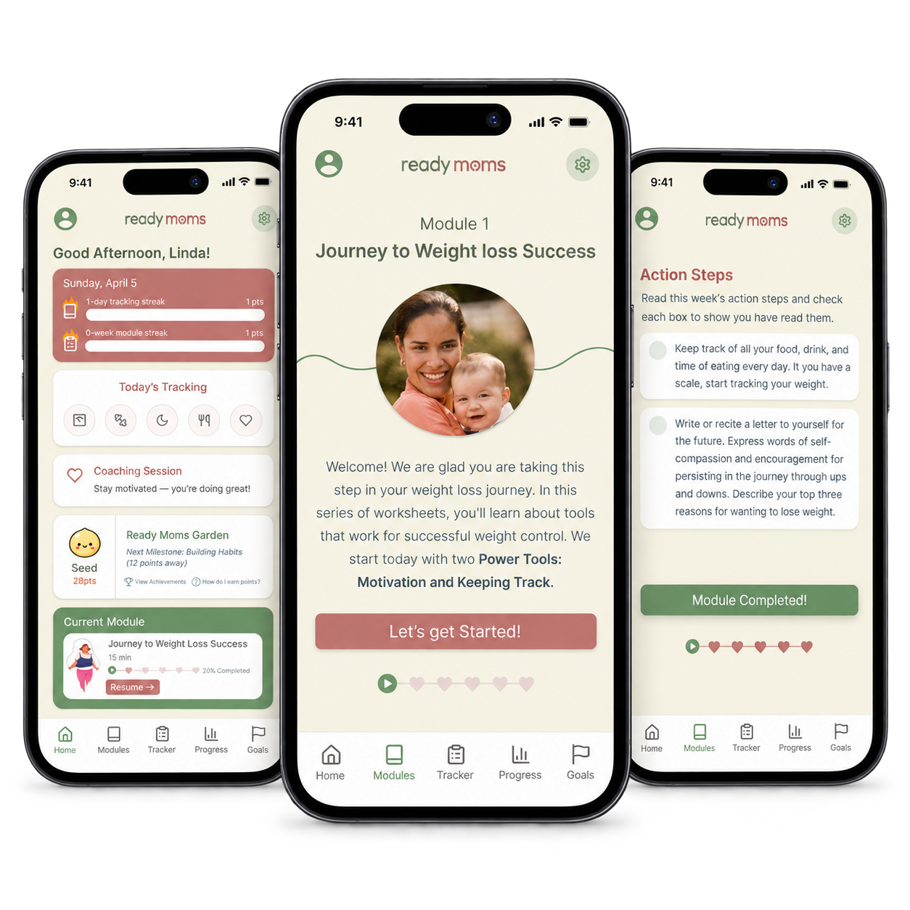
The project
What is ReadyMoms?
ReadyMoms is part of an NIH-funded randomized trial studying whether pregnant women with obesity have better health outcomes if they maintain their weight during pregnancy.
Participants enroll at the beginning of their second trimester and are followed until after delivery. The study is conducted in partnership with Kaiser Permanente.
The app supports the study by providing participants with educational content and opportunities for reflection.
How might we...
How might we make digital learning and reflection easier while encouraging participants to return regularly, without making the information feel overwhelming?
Understanding the problem
From a researcher’s vision to a user’s experience
Before designing, I worked closely with the project manager to understand what ReadyMoms actually needed to accomplish.
What should participants feel while using the app? What should they accomplish after completing a module? What would make them want to return?
Through these conversations, I found a gap between the team’s vision and the existing experience.
The team wanted ReadyMoms to feel supportive and engaging. The interface felt more like reading a digital document.
Much of the educational content came directly from PDFs, resulting in long sections of text with few opportunities for participants to interact or reflect.
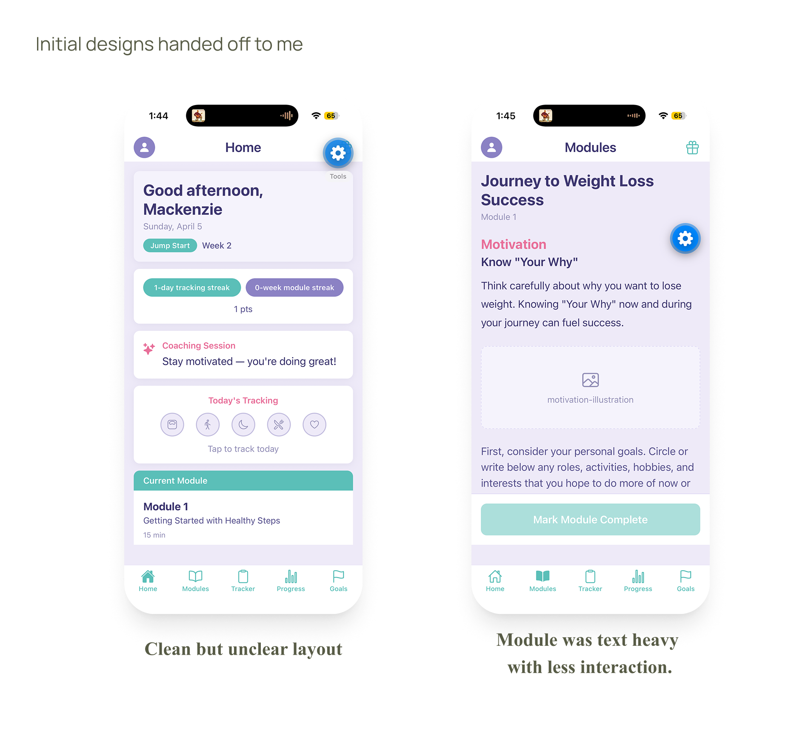
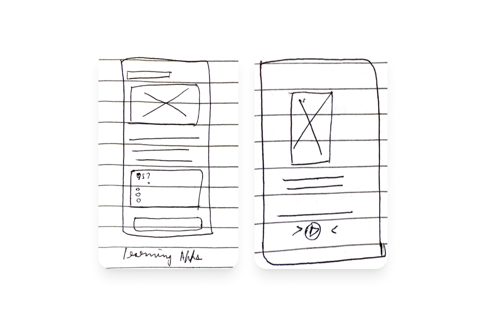
Research + exploration
Learning from other experiences
I analyzed module-based learning platforms and audiobook apps to understand how other products make large amounts of information easier to navigate.
I focused on how they break content into smaller sections, communicate progress, and encourage users to continue.
ChunkingBreak information into smaller moments.
ProgressShow where participants are.
Return cuesEncourage the next step.
This shifted my thinking from designing a place where participants simply read information to creating a more guided learning experience.
Exploring quickly with AI
AI as a brainstorming buddy
With a tight research timeline, I needed to explore ideas without spending too much time fully designing directions that might not work.
I used Figma Make as a brainstorming tool, quickly turning ideas into rough interface explorations and comparing different ways the modules and interactions could work.
I then evaluated those explorations, selected what made sense for ReadyMoms, and refined the interactions and visual design myself.
AI helped me move faster through exploration — not replace the design decisions that came after it.
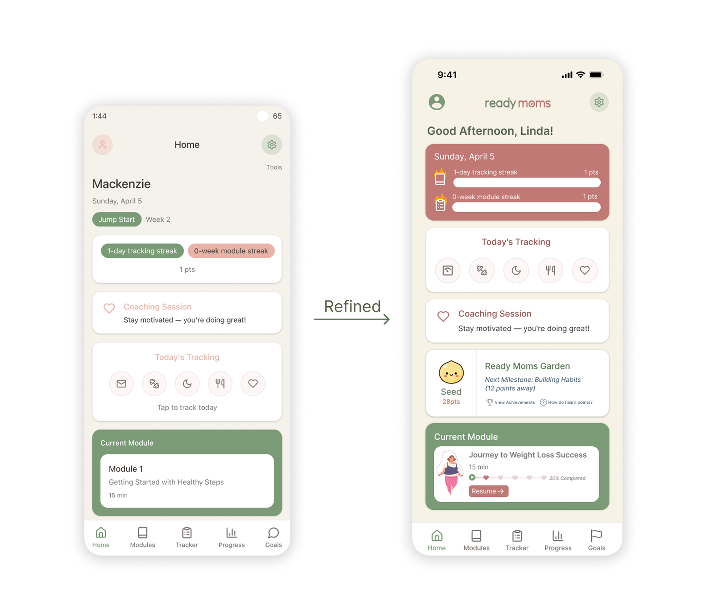
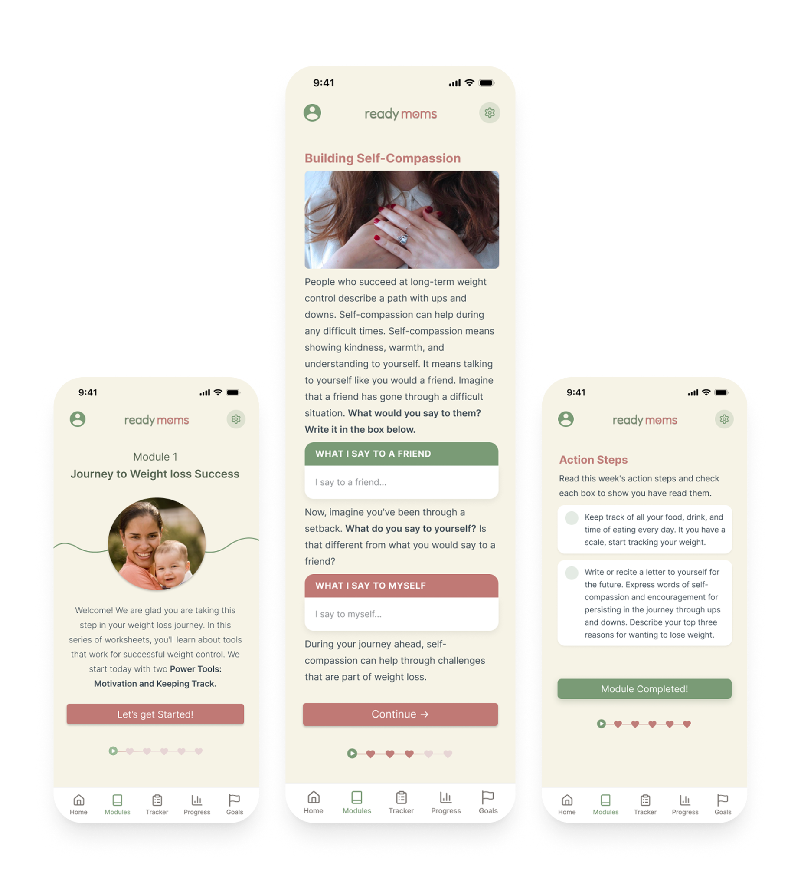
Designing the experience
From reading → to participating
The biggest change was rethinking how participants moved through educational content.
Instead of transferring entire sections from the learning PDFs into the app, I broke modules into smaller interactive moments.
Learn → Reflect → Choose → Progress
The goal was to make participants feel part of the learning experience rather than simply consuming information.
Finding the visual direction
Supportive, without feeling stereotypical
My first visual direction used colors commonly associated with women’s health, including pink.
After discussing it with the project manager, I realized it didn’t match what the team wanted ReadyMoms to communicate. They wanted something supportive without feeling like a stereotypical women’s health app.
I went back to the system and explored a warmer, earthier visual direction with more imagery and graphics.
The second direction was approved.
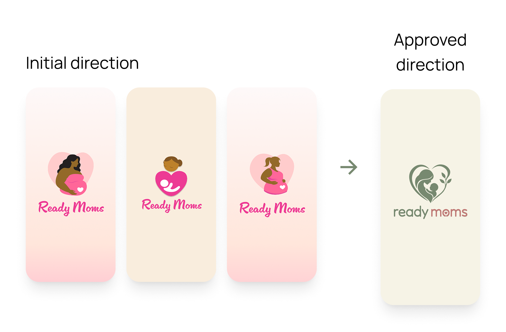
Designing with development in mind
But can we actually build it?
Throughout the process, I worked closely with the developer to make sure the interactions I designed were feasible within our technical constraints and timeline.
Can we build this? Is there a simpler way to achieve the same experience?
These conversations helped me find the balance between the ideal experience and what we could realistically build.
Creating the ReadyMoms identity
My first logo for a real client
ReadyMoms was also the first logo I designed for a real client.
I quickly learned that designing a logo involved much more than creating something that looked good. I had to consider how it worked at different sizes, how it connected to the visual system, and whether it communicated the feeling the team wanted ReadyMoms to have.
It became another process of iteration, feedback, and asking better questions.
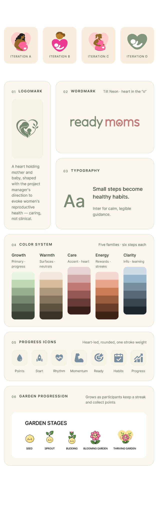
The final experience
Learning without feeling like a document
The redesigned ReadyMoms experience brought together a warmer visual system, shorter learning moments, reflection, and clearer opportunities for interaction. Rather than treating the app as a container for research content, I designed it as an experience that could guide participants through that content.
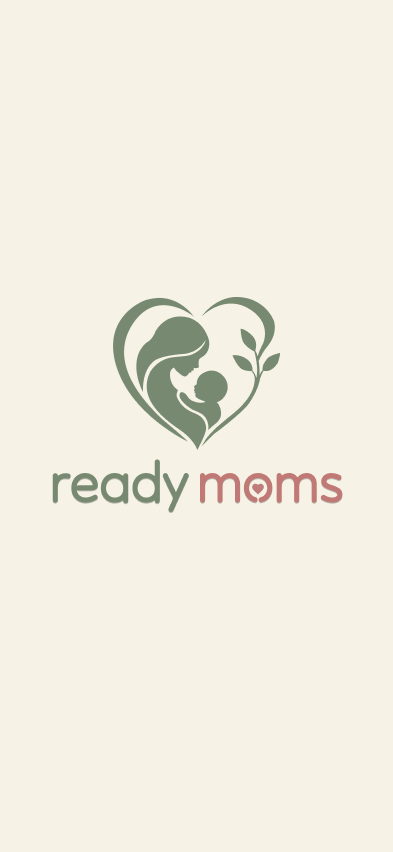
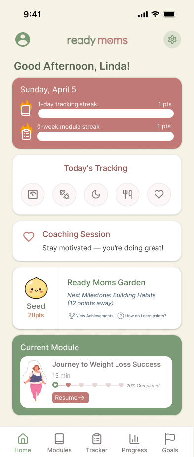
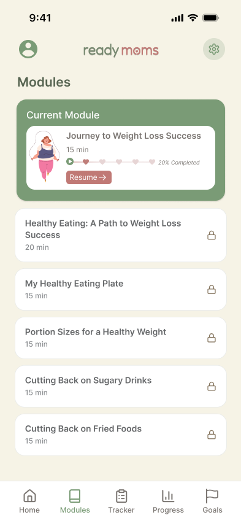
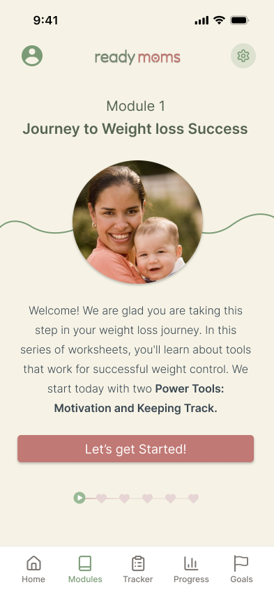
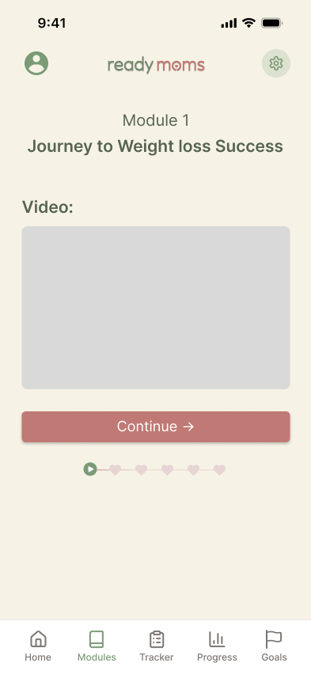
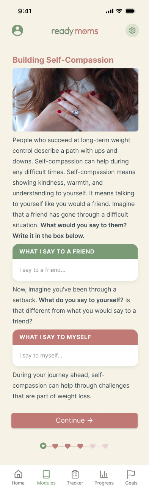
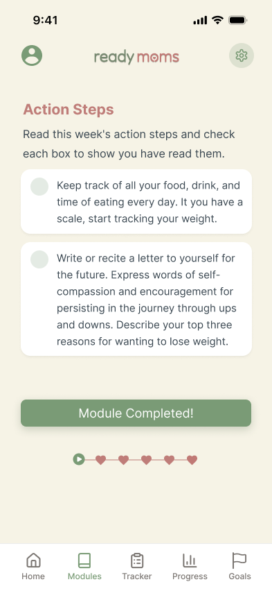
Impact in practice
Making research content easier to move through.
Alongside the redesign, I contributed the visual and production work needed to make ReadyMoms clearer, more engaging, and easier to integrate into the app.
Reflections + learnings
Designing between different needs
Being the only designer on the team taught me that UX isn’t just about advocating for one perspective.
What does the user need?An experience that feels clear and approachable.
What does the research team need?A way to communicate important educational content and support the goals of the study.
What can development support?An experience that is technically feasible within our constraints.
This project also changed how I think about AI in my process. It helped me explore faster, but I still had to question the outputs, decide what actually worked, and refine those ideas around the needs of the project.
More than anything, ReadyMoms taught me to ask better questions before trying to design better answers.
Ask better questions before trying to design better answers.